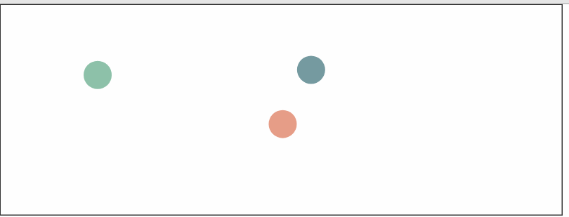

原文连接:https://www.cnblogs.com/dashnowords/p/10753005.html
目录

示例代码托管在：http://www.github.com/dashnowords/blogs
博客园地址：《大史住在大前端》原创博文目录
华为云社区地址：【你要的前端打怪升级指南】
经过前面章节相对枯燥的练习，相信你已经能够上手canvas的原生API了，那么从这一节开始，我们就开始接触点好玩的东西——动画。

一. canvas的能力
如果你以为canvas只能绘制图表那真的就图样图森破了，且不谈webgl的绘图上下文，单就2d空间的画笔就可以做很多有意思的事情，比如实现一些酷炫的动画效果，比如做一些物理仿真，图片滤镜，直播弹幕，甚至做游戏开发等等，画面的变化大多依赖于canvas提供的像素操作能力，而动效几乎都是靠canvas在短时间内逐帧绘制而形成的，和电影的原理是一样的。
我们知道javascript中和时间控制有关的函数setTimeout( ) 以及setInterval( )最终执行时的时间点并不准确，因为在事件队列中会被其他异步任务影响甚至直接阻塞，那么在不断重复的绘制中，就有可能会出现卡顿或者忽快忽慢；另一方面，假设我们使用的电脑显示屏刷新率为60帧/秒，也就是大约16.7ms重绘一次，那么即时我们在16.7ms时间内执行了很多次计算和绘制命令，实际上最终呈现出的也只是最后一次结果，就好比对一段很密集的数据进行了隔点采样，轻则浪费性能，重则会在画面呈现时出现跳帧。为了配合显示器刷新，我们可以使用另一个方法——requestAnimationFrame（fn），这是javascript中专门用来绘制逐帧动画的，它会配合显示器的刷新频率进行必要的图像更新，节省不必要的性能浪费。
二. 动画框架
在canvas上实现基本的动画，可以遵循一个基本的编程框架:
function step(){
/**
*在每一帧中要执行的逻辑
*......
*/
requestAnimationFrame(step);
}
step();//启动执行你没看错，这就是canvas动画最核心的一段代码，step（）函数会在每个绘图周期内重复执行。那么每一帧中需要做哪些工作呢？
我们将canvas想象成一个舞台stage，每一个需要绘制在画布上的元素被称为精灵，无论它们拥有怎样的属性，它们都具备update( )和paint( )两个基本方法，前者用于在每一帧中计算更新精灵的参数属性，后者用于将这个精灵对象绘制在画布上。那么step函数在每一帧中所执行的逻辑就变得明朗了，对画布进行必要的擦除，接着更新每一个精灵的状态（可能是位置，颜色等等），然后将其绘制在画布上。
比如现在要在画布上表现一段太阳东升西落得动画，对应的伪代码就是下面这个样子的：
let stage = [];
stage.push(background, tree, cloud, sun);
function step(){
cleanStage();//对画布进行必要擦除
background.update();//更新土地的属性
tree.update();//更新树的属性
cloud.update();//更新云的属性
sun.update();//更新太阳的属性（属性中必然包含着太阳的位置数据）
background.paint();//绘制土地
tree.paint();//绘制树
cloud.paint();//绘制云
sun.paint();//绘制太阳
requestAnimationFrame(step);
}如果你理解了上面的过程，那么接下来我们对上述代码进行一些抽象和改写：
//建立舞台及添加元素的代码
let stage = [];
stage.push(background, tree, cloud, sun....);
//逐帧动画代码
function step(){
cleanStage();
stage.map(sprite=>{
sprite,update();
sprite.paint(ctx);
});
requestAnimationFrame(step);
}每一个精灵对象都需要实现自己的update( )和 paint( )方法来描述自己的参数如何变化，以及如何在每一帧中被绘制，被添加进stage数组的都是精灵的实例，一般会将canvas绘图上下文传入paint(context)方法，这样就可以将精灵绘制在指定的画布上。上面的范式只是一个简陋的核心模型，但是已经足够说明canvas动画的本质。
三. 在canvas中模拟碰撞
现在我们就通过一个碰撞仿真的例子来学习canvas动画以及基本的物理仿真分析，示例虽然精简，但包含了canvas动效最核心的精灵动画和碰撞检测主题。为了方便二维向量操作并隐藏各种数学计算的细节，我们直接使用一个已经定义好的Vector2类，其中封装了很多向量的基本操作，都是初高中数学的知识，如果你已经记不太清楚，可以找一些有关的资料复习一下。
3.1定义小球的属性
将每一个小球视为一个精灵，我们需要为它增加一些基本属性以便在每一帧中能够将其绘制出来。通过位置，半径和颜色信息，就能够绘制出小球；通过速度信息，就可以计算小球的位置变化，以便在绘制下一帧时使用。
class Ball{
constructor(x,y,id){
this.pos = new Vector2(x,y);//初始化小球的位置
this.id = id;
this.color = '';//绘制的颜色
this.r = 20;//小球半径，为方便演示，此处使用给定值
this.velocity = null;//小球的速度
}
}3.2 生成新的小球
为了增加演示效果，我们使用一个定时函数来随机生成小球，每次生成时为其赋予一个颜色，并给定一个随机的初始速度。
//为全局balls数组增加一个新的小球,初始位置为(50,30),
function addBall() {
let ball = new Ball(50,30,balls.length);
ball.color = colorPalette[parseInt(steps / 100,10) % 10];
ball.velocity = new Vector2(5*Math.random(), 5 * Math.random());
balls.push(ball);
}为了方便起见，我们使用一个全局自增的数值变量，在step中根据条件来执行addBall()方法:
if (steps % 100 === 0 && steps < 1500) {
addBall();
}step每循环100次（大约1.5秒）就会多生成一个向随机方向发射的小球，且小球的数量不能超过15个。
3.3 帧动画绘制函数step
step函数是动画的核心，我们需要在其中完成重绘背景，添加小球，更新每个小球，绘制小球这些逻辑（由于背景是静态的，示例中并没有将其抽象为精灵动画）。
function step() {
steps++;
//重绘背景
paintBg();
//每隔一定时间增加一个小球
if (steps % 100 === 0 && steps < 1500) {
addBall();
}
//更新每个小球的状态
balls = balls.map((ball,index,originArr)=>{
ball.update(index,originArr);
ball.paint();//描线但不在画布上绘制
return ball;
});
//绘制每个小球位置
requestAnimationFrame(step);
}3.4 定义小球的update方法
精灵的绘制方法paint一般都只涉及canvas的基本绘图API,并不复杂，例如本例中，只需要在小球的pos属性记录的位置处绘制一个封闭弧线并填充它就可以了。精灵的update( )方法往往才是最难编写的部分。在这个方法中，需要完成的基本逻辑包括状态更新和碰撞检测。
状态更新
状态更新一般包括自身状态更新和相对状态更新。自身状态的更新，比如你希望小球在运动过程中颜色会有变化，就属于自身状态的变化，相对状态变化一般指小球相对公共坐标系或某个参照对象而发生的宏观位置变化，比如本例中的小球位置变化。
碰撞检测
碰撞检测一般包括精灵是否与其他精灵发生碰撞，并需要对碰撞后造成的影响进行仿真。
参考代码:
/*更新状态
由于检测碰撞需要知道其他小球的位置，故此处将小球数组的引用传入
也可以直接以面向对象的方式来定义*/
update(index,balls){
let nextPos;//模拟下一次落点
//1.计算下一次落点
nextPos = this.pos.add(this.velocity.multiply(dt));
//2.判断新位置是否碰触边界，如果是则边界法向的速度反向，假设碰撞过程是无能量损失
if (nextPos.x + this.r > rightBorder || nextPos.x < this.r) {
this.velocity.x = -1 * this.velocity.x;//速度分量反向
nextPos = this.pos;//取消当前帧的位置更新
}
if (nextPos.y + this.r > bottomBorder || nextPos.y < this.r) {
this.velocity.y = -1 * this.velocity.y;
nextPos = this.pos;
}
//3.判断是否与其他小球产生碰撞，为避免重复，每个小球只和比自己id更大的小球做检测
balls.map(ball=>{
if (ball.id > index && this.checkCollision(ball)) {
this.handleCollision(ball);
}
return ball;
});
//4.确认更新位置
this.pos = nextPos;
}3.5 碰撞检测
规则形状的碰撞检测一般有某些特殊方法，例如平面内的小球，其实只需要判断圆心的距离和两球半径和的大小，就可以知道两球是否碰撞。而当检测物体的外观并不规则时，碰撞检测是成了一个非常复杂的问题，最常用的方法包括外接盒检测，光线投射法和分离轴定理检测，感兴趣的小伙伴可以自行查资料进行学习。本例中的检测方法实际上是外接盒检测法的一种基本情况。
//碰撞检测
checkCollision(ball){
return this.pos.subtract(ball.pos).length() < this.r + ball.r;
}3.6 碰撞仿真
碰撞仿真就是利用物理知识来计算碰撞对于物体造成的影响并修改其对应参数。本例中的碰撞可以抽象为两个质量相等的运动小球的非对心碰撞，且不计能量损失，一般情况下需要使用能量守恒定理和动量守恒定理联立方程进行求解。本例的仿真中，我们先将小球的非对心碰撞简化为对心碰撞，方法是将小球的速度向量分解为沿球心连线方向Vr以及沿圆心连线法向Vn两个分量，然后使用两个小球的Vr来进行对心碰撞的模拟（质量相等的刚体对心碰撞后会互换速度），接着再将碰撞后的速度与小球自己的法向速度Vn进行向量合成即可。
本例的代码中使用了简化的方案，只计算了沿球心连线方向的分量并进行了碰撞模拟，没有对碰撞后的速度进行合成，但对碰撞模拟的效果影响不大。参考代码如下：
//处理碰撞
handleCollision(ball){
let ballToThis = this.pos.subtract(ball.pos).normalize();
let thisToBall = ballToThis.negate();
this.velocity = ballToThis.multiply(Math.abs(ball.velocity.length()*(ball.velocity.dot(ballToThis) / ball.velocity.length())));
ball.velocity = thisToBall.multiply(Math.abs(this.velocity.length()*(this.velocity.dot(ballToThis) / this.velocity.length())));
}碰撞后两个小球的速度都发生了变化，在下一帧更新位置时就会表现出来，效果已经在本节开头展示出了。
完整的示例代码可以参见附件的demo，或访问开头处我的
github仓库地址。
四. 下一步
有了这样一个撞球的基本模型和示例，你能做出一个乒乓球小游戏或是撞球小游戏吗？